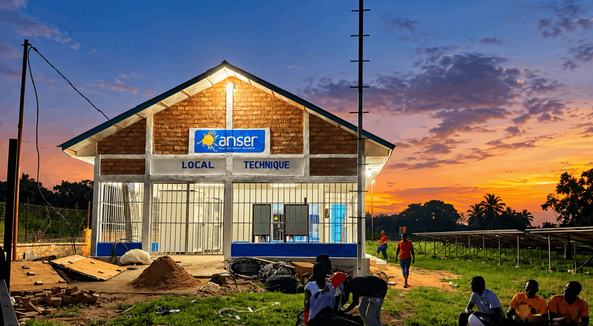

0
Projets déployés
0
Projets déployés
0
Centrales électriques installées
0 MW
Puissance électrique installée
0 330
Ménages impactés
Concevoir, mettre en œuvre et suivre les programmes d’électrification rurale sur tout le territoire national.
Planifier et coordonner les projets d’électrification en tenant compte des besoins locaux pour favoriser un développement territorial équilibré.
Soutenir le financement des projets d’électrification afin de favoriser l’accès à l’énergie dans les zones rurales et périurbaines congolaises.
Mobiliser des financements à travers le Fonds Mwinda et encourager les investissements privés dans les infrastructures énergétiques.

Inauguration de la mini-centrale au fil de l’eau avec extension du réseau de distribution basse tension.
| Impact bénéficiaires | 95.000 habitants |
| Gestionnaire / Opérateur | ANSER – Filiale Sud |
| Capacité installée | 8,2 MW |
| Province | Haut-Lomami |
| Site / Territoire | Kamina / Bukama |
| Pool régional | Pool Grand Katanga |
Derrière chaque projet d’électrification se trouvent des histoires, des expériences et des changements vécus au quotidien par les communautés. Vous avez bénéficié d’un projet soutenu par l’ANSER ? Votre témoignage nous intéresse !
Racontez-nous comment l’accès à l’électricité a transformé votre quotidien, facilité vos activités ou créé de nouvelles opportunités pour vous et votre communauté. En partageant votre expérience, vous contribuez à mettre en lumière les réalités du terrain et à faire connaître l’impact concret de l’électrification à travers la RDC.
